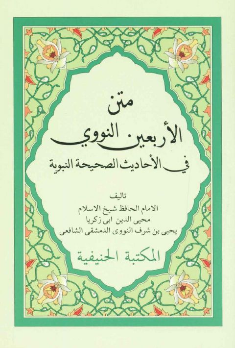

Downloads need an internet connection.
متن الأربعين النووية في الأحاديث الصحيحة النبوية
Authors: يحيى بن شرف النووي
Publishers: المكتبة الحنيفية
**▫️ العنوان: متن الأربعين النووية في الأحاديث الصحيحة النبوية** ▪️ المؤلف: #يحيى_بن_شرف_النووي ▫️ الناشر: #المكتبة_الحنيفية ▪️ الطبعة: 1 ▫️ عدد الأجزاء: 1 ▪️ الصفحات: 66 ▫️ نوع الوعاء: #كتاب ▪️ التصنيف الرئيسي: #الحديث_وعلومه ۪